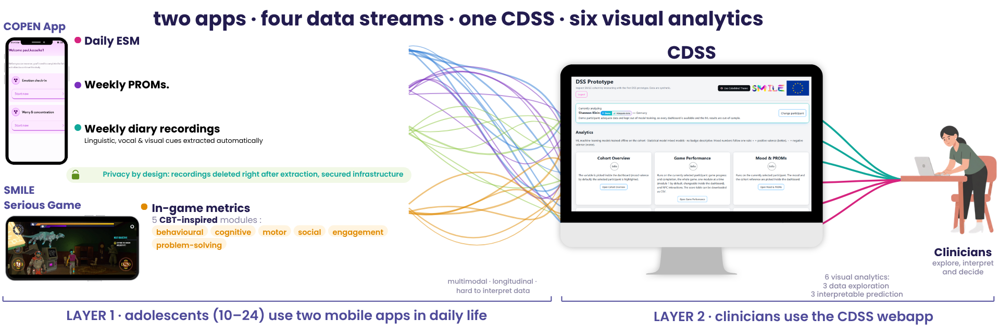

Inspect SMILE cohort by interacting with the first DSS prototype. Data are synthetic.
ML machine-learning models trained offline on the cohort · Statistical model mixed models · no badge: descriptive. Mood numbers follow one rule: + = positive valence (better), − = negative valence (worse).
